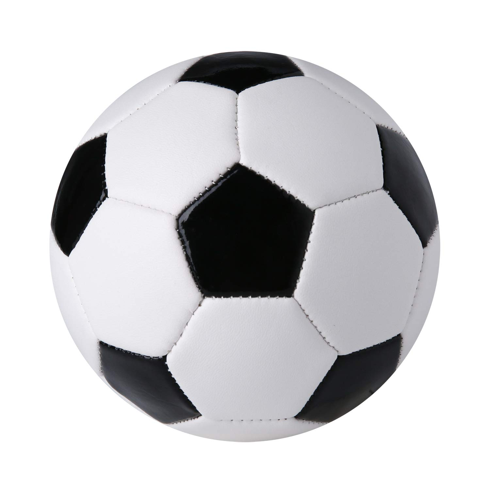
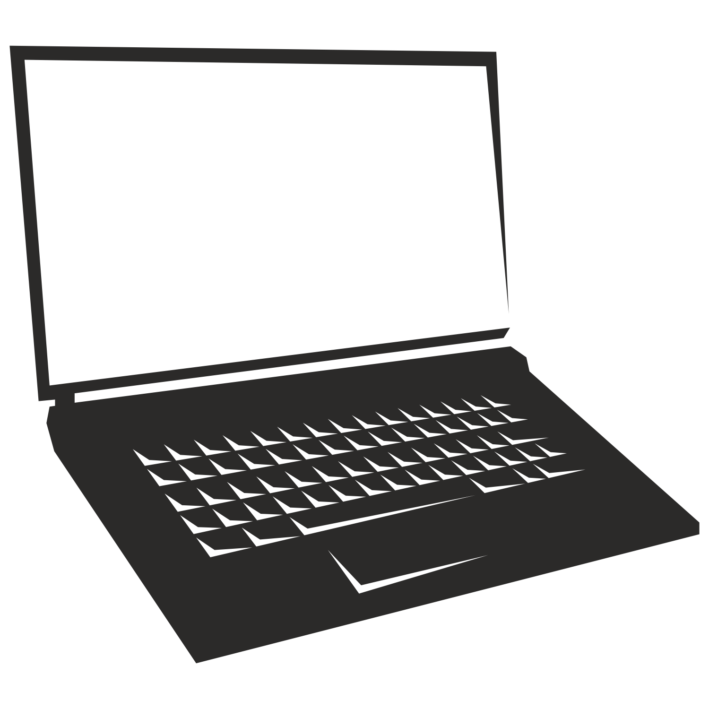

Soccer
I love playing soccer because it keeps me active and helps me work as a team.

Video Games
Gaming allows me to explore different worlds and challenge myself strategically.

Coding
I enjoy coding because it allows me to create and solve problems using logic.